Tu plan. Cada línea del corte está a la derecha. La casilla de la izquierda es tuya: escribe qué se ve en pantalla. 68.5 s · 34 líneas.
te pasar si sentadillas?
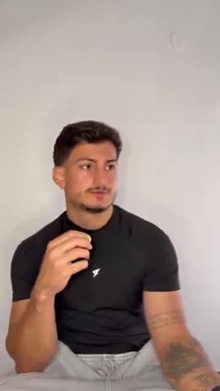
No.
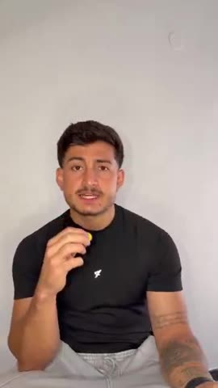
Estas piernas son de un ciclista de pista profesional,
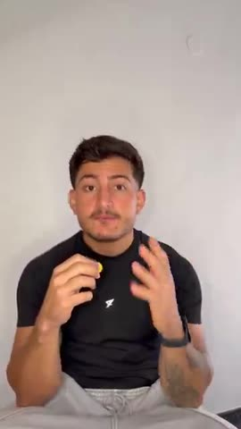
Robert Forzman.
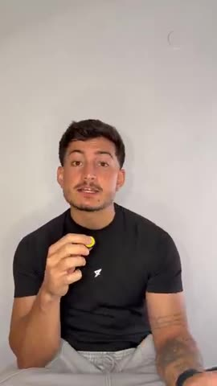
y cada vez que digo que hagas entadillas
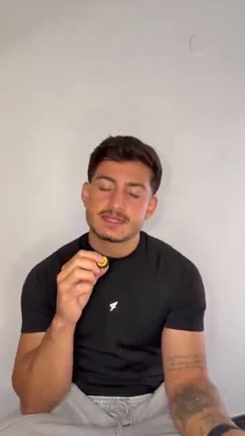
alguien me dice
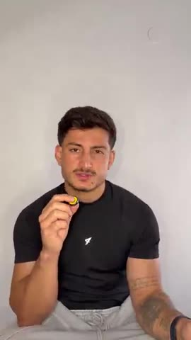
paso
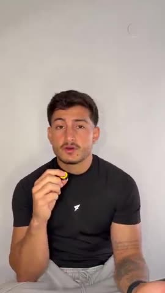
mejor
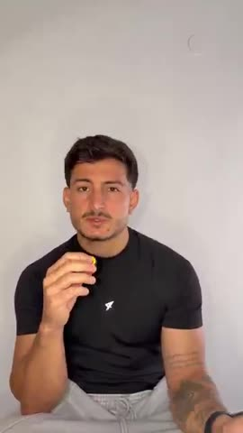
paso que me pongo grande subo peor
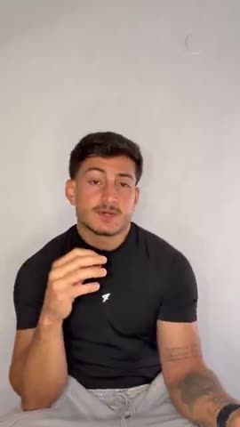
mira yo era muy delgado
Y ganar músculo me ha costado montón de trabajo
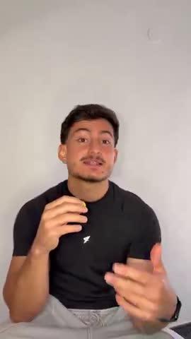
aún así sigo compitiendo en descenso.
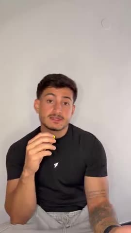
Para tener unas piernas como esa hace falta muchos
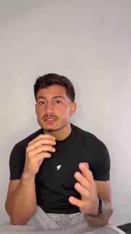
años entrenando solo para eso.
Comiendo muchísimo
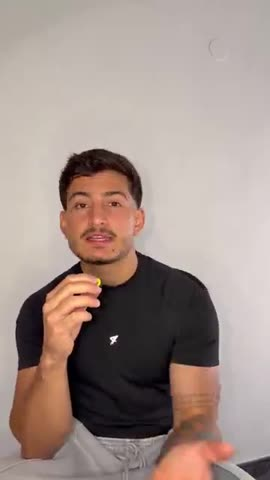
una genética especial.
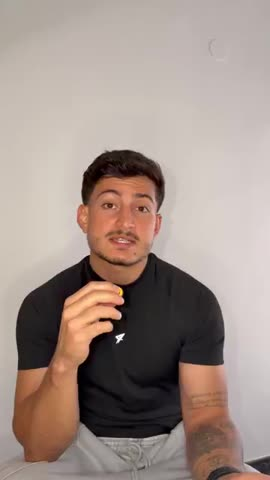
Tú vas a hacer solo dos días de fuerza
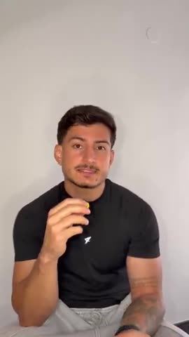
la semana.
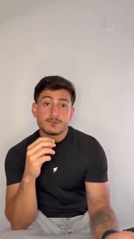
comiendo para bajar el porcentaje de grasa corporal
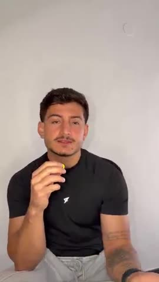
montando el fin de
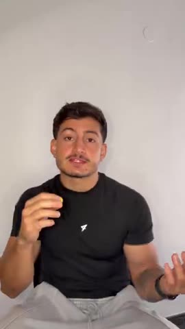
no te vas a despertar un día con esas
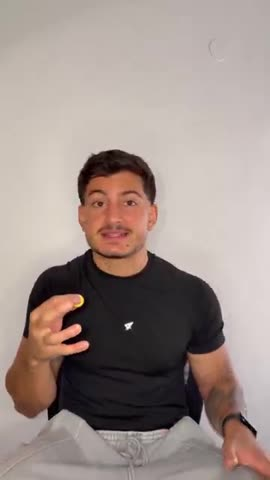
piernas
Lo que si vas a tener es más fuerza
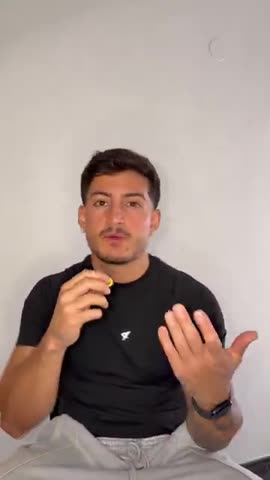
para empujar el pedal.
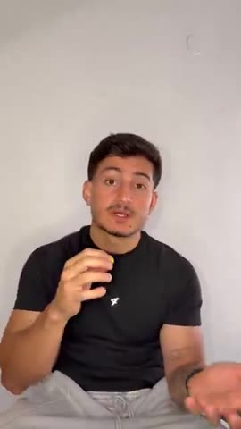
Más aguanten las subidas
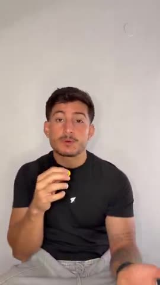
un cuerpo que aguanta mejor las
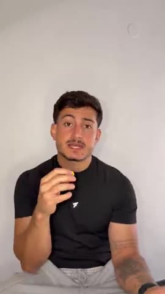
Las pesas no te van convertir en un velocista
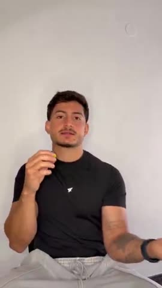
de pista.
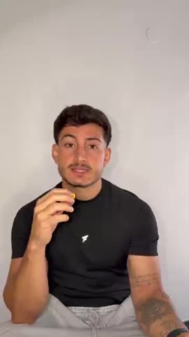
te van a un ciclista más fuerte que sube
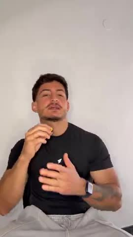
mejor se ve mejor
si quieres entrenar fuerza sin miedo a ponerte grande
ni a subir peor
Sígueme, porque aquí te enseño hacerlo como ciclista,
no como culturista.